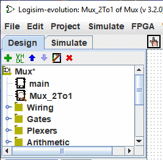

יצירת מעגלים
כל פרויקט Logisim הוא למעשה ספריית מעגלים. בצורתו הפשוטה ביותר, לכל פרויקט יש רק מעגל אחד
(נקרא main כברירת מחדל), אך קל להוסיף עוד: לחץ על הלחצן  של שורת התפריטים הקטנה מעל חלונית הניווט או קליק ימני על שורש העץ בחלונית הניווט או בחר | פרויקט |→| הוסף מעגל... | ולאחר מכן הקלד כל שם שתרצה עבור המעגל החדש שאתה רוצה
לִיצוֹר.
של שורת התפריטים הקטנה מעל חלונית הניווט או קליק ימני על שורש העץ בחלונית הניווט או בחר | פרויקט |→| הוסף מעגל... | ולאחר מכן הקלד כל שם שתרצה עבור המעגל החדש שאתה רוצה
לִיצוֹר.
הערה: שם המעגלים חייב להתחיל באות (A..Z, a..z) הוא יכול להכיל את הסימנים (., _) ומספרים.
נניח שאנו רוצים לבנות מרבבי 2 ל-1 בשם Mux_2to1." לאחר הוספת המעגל, לוגיסים ייראה כך.

בחלונית הסייר, כעת תוכל לראות שהפרויקט מכיל כעת שני מעגלים, ראשי, ו Mux_2to1 Logisim מצייר זכוכית מגדלת על סמל המעגל שנמצא כעת נצפה; שם המעגל הנוכחי מופיע גם בשורת הכותרת של החלון.
לאחר עריכת המעגל כך שיופיע כמו Mux_2to1, אנו עשויים לסיים עם ההודעה הבאה מעגל חשמלי.

הבא: שימוש במעגלי משנה.